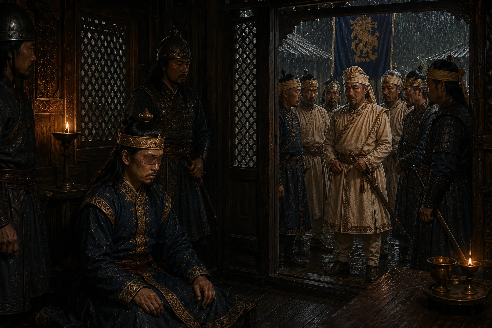

Deposition and Tragic End of Sujinphaa
1677 · Six kings in nine years

Sujinphaa is captured, blinded according to Ahom dynastic custom, and passes away in confinement.
Sources have not yet been catalogued for this record.
People: Sujinphaa (Arjun Konwar)
Open this scene in the interactive archive · Follow this event on MAP